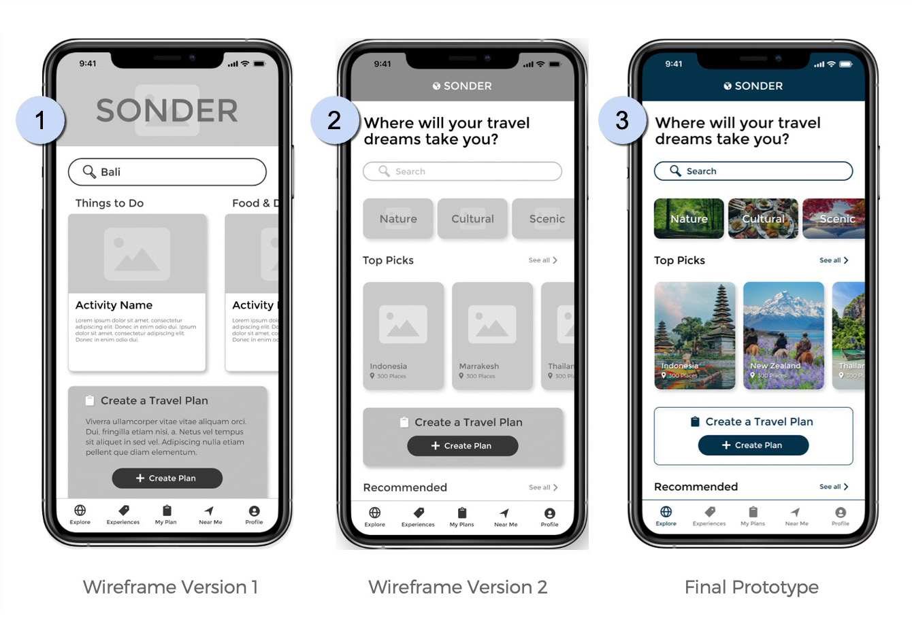
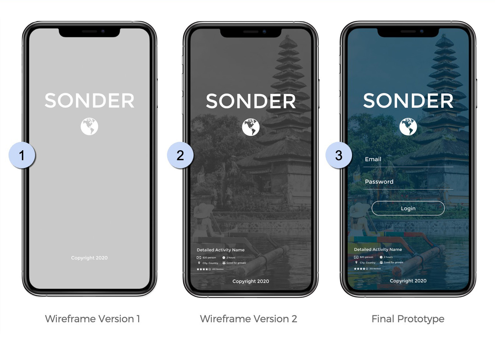

Due to the rapidly changing pandemic situation in March, 2020, this site update required extreme flexibility and patience. No one was sure what exactly was going to change or how - but they knew it would. Communication with the public and state and local agencies regarding Court activities was paramount and also a legal obligation of the Courts.
New content added to the Court's website is typically decided on by Committee, however, this process was tabled due to the pandemic and the need to rapidly disseminate information to the public.
The project itself came together very quickly and was implemented into the existing OCCourts.org website. I was required to strictly conform to the existing layout and design while finding ways to add content and functionality.
Web Design | MArch, 2020
COVID-19 Virus Response
Superior Court of Orange County
Web Design Case Study
My Role
UX Designer,
Web Designer / Developer
Web Designer / Developer
Tools
Sublime Text,
WinSCP, MS Teams
WinSCP, MS Teams
Timeframe
1 Week
The Superior Court of Orange County needed a way to share and update general notices, administrative orders and press releases with the general public, as well as other state and local agencies, during the COVID-19 pandemic to quickly communicate information regarding court closures and procedures. Users had to be able to access information, search and download documents separated by department as some would stay open while others would close, offering only remote or online services.
Problem
The existing list of Public Notices on the Courts' website was one big long list which was not separated by department and was not specific to how the Court was responding to the COVID-19 pandemic.
Solution
Create a landing page linked from the homepage where users could go to relevant department pages to conveniently find and search through general notices, administrative orders and press releases so that the general public and other state and local agencies could stay updated on Court closures and procedures during the pandemic.
Constraints:
- New content had to exactly match the existing theme and layout
- Scope was limited to the COVID landing page and department pages only, no work was done on the homepage or other pages
- Content had to be accessible by all types of internet users, large font, easy to use, etc.
- Time was of the essence and project completion was closely monitored
- Not able to follow the Design Thinking Process due to timeline
Assumptions:
- Departments would add new content as it became available
- Some departments would convert from offering in-person to online services and their pages would need to accommodate this transition
- Everything could change at a moments notice
Landing Page Links
To maximize usability, I designed the cards above as buttons that link to the individual department COVID update pages to be oversized, with large, readable font and an obvious hover interaction to clearly indicate they are clickable.
For fun, and a bit of added design, I included icons related to each department and created a Neumorphic look to the cards in an effort to stay within the style and theme of the existing website while separating each link from the background.
For fun, and a bit of added design, I included icons related to each department and created a Neumorphic look to the cards in an effort to stay within the style and theme of the existing website while separating each link from the background.
Collapsible / Sortable Sections
One of the requirements was to make all of the Administrative Orders and other documents posted to the main landing page sortable so users could find what they're look for.
Therefore, each collapsible section can be sorted by:
Therefore, each collapsible section can be sorted by:
- Departments would add new content as it became available
- Some departments would convert from offering in-person to online services and their pages would need to accommodate this transition
- Everything could change at a moments notice
A survey based on our interview questions was also sent out via Slack. Eleven participants - 54.5% Female, 45.5% Male - ranging from 21-35 years of age who travel an average of 2-3 times per year responded to our survey.

Results showed that 90% of respondents felt that learning about a new culture was significantly important to them while traveling. The top three categories they were interested in learning about were: local food, the local lifestyle, and local architecture.
Ideation
After empathizing with our users and defining the problem, we set about coming up with solutions to help users find authentic local cultural activities to experience on their next trip.
Problem Statement:
How might we improve the authenticity and increase the variety of local cultural activities shown to users so they feel successful in planning their trips based on an increase in return visits to the “Sonder” app over a six month period?
Feature Prioritization
We created a Feature Prioritization matrix to analyze the impact, priority, and complexity of implementing solutions for each user problem we discovered in the research phase.
Final App Features List:
- Ability to find local cultural activities
- Easily plan trips
- Use the app to find hidden gem locations
- All necessary info can be saved offline
- Local cultural activities are well listed
- All travel info in one place
Prototype / Wireframes
I'm working solo from this point on in the project.
Competitor Analysis
I downloaded other apps in the cultural tourism travel space to get an idea of what competitors were focusing on and where they were potentially falling short of solving problems and delighting users. Here's what I found with the Localeur.com mobile app:
Wireframe Sketches
Working from the storyboard, I developed user flows and sketched wireframes to reflect the user's flow of searching for a travel destination and selecting a category and their first cultural activity to do on the trip.
Lo-Fi Wireframes:
In response to testing feedback, I combined step 3 - 'Select Category' and step 4 - 'Select Activity' onto the same screen in the low fidelity version of the wireframe:
Booking Process Wireframes:
Below is the booking process flow after the user has selected an activity along with adding the activity to their travel plan:
Final Prototype:
Usability Testing
5 Usability tests were conducted using a combination of the Concurrent Think Aloud (CTA) method and the Concurrent Prodding (CP) moderation method.
Goal
Discover how easy it is for users to search for a destination, find an activity to do at their chosen destination, add their chosen activity to their travel plan and/or create a new travel plan.
Assumptions - the user:
- Has access to reliable WiFi or cell data and no connection problems
- Has adequate budget, vacation time and motivation to travel
- Is looking for cultural activities to do on an upcoming vacation
- Is ok with the duration and price of the activity
- Already has an account and knows their password
- Is not familiar with how the app functions
Constraints - the user:
- Can only view information and book one activity at a time
- Can only add one activity to a travel plan at a time
- Can only create one travel plan at a time
- Search results only return Indonesia as pre-filled destination created for this prototype
- Other features like “Experiences”, “Near Me, and “Profile” were not built out as part of this prototype
Iterations Based on Testing Feedback:
In the first wireframe version, the user would select either an activity or a destination on the home screen (#1). They were then presented with a category screen to choose an activity category (#2). A tester stated this layout was confusing, that the categories and activities should be combined into one screen and “made obvious”.
In the final design (#3), top level categories were added in a horizontal slider above the activities seen by the user after they select a travel destination.
In the final design (#3), top level categories were added in a horizontal slider above the activities seen by the user after they select a travel destination.

In the first version of the lo-fi wireframes, there weren’t clear instructions on the home screen telling the user what action to take (#1). This was pointed out by testers and corrected in version two by adding the “Where will your travel dreams take you?” call to action directly under the header as the first thing the user sees (#2). This can also be seen in the final hi-fidelity version of the prototype (#3).

In the first and second version of the lo-fi wireframes, there was no input area for login information (#1 & #2). It was purposefully left out because onboarding was not a part of this user flow, however, testers stated that this seemed strange.
An input area for user login information was added along with a login button to the final prototype version (#3).

An input area for user login information was added along with a login button to the final prototype version (#3).
Conclusion
My plan for the design of this app was to create a modern UI that would delight users while allowing them to easily navigate and solve the problem we identified in the User Research and Definition phase of this project.
The result was a modular, multi-directional scrollable, card based mobile layout with bottom main navigation to allow the user to see and experience the content.
The result was a modular, multi-directional scrollable, card based mobile layout with bottom main navigation to allow the user to see and experience the content.
Next Steps:
- Build out other features like “Experiences”, “Near Me, and “Profile”
- Add more travel destinations
- Ability to recall saved travel plans
- Ability to save payment methods